BMA, LASSO, and WALS — graded against a known answer key
Nagoya University (GSID)
June 11, 2026
Act I
You advise a government on climate policy. You have a dozen candidate drivers of CO\(_2\) emissions and a limited budget.
Run one regression and report it, and you have assumed the other 4,095 models are wrong. Which subset truly matters — and which are red herrings?
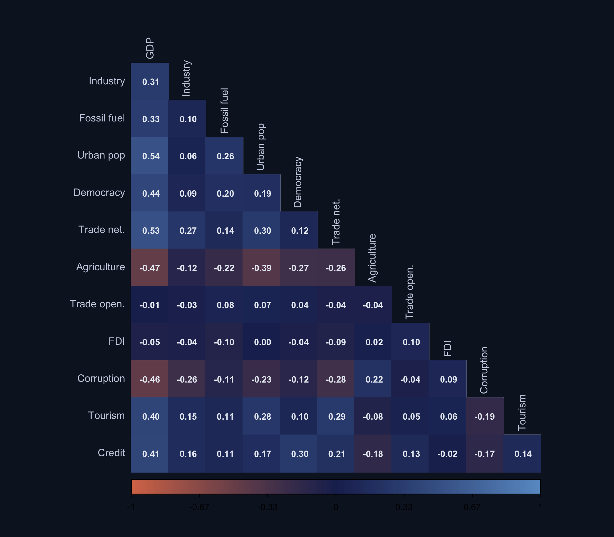
Noise variables (trade openness, tourism, credit) are deliberately correlated with GDP and other true predictors — the multicollinearity that makes naive OLS unreliable.
0.98
\(R^2\) of the kitchen-sink OLS — a great fit that still cannot tell signal from noise
Act II
Different machinery, same target — agreement across them is what earns credibility.
\[P(M_k\mid y)=\frac{P(y\mid M_k)\,P(M_k)}{\sum_{l=1}^{2^K} P(y\mid M_l)\,P(M_l)}\]
The marginal likelihood \(P(y\mid M_k)\) is a built-in Occam’s razor — complex models spread their probability thin.
\[\text{PIP}_j=\sum_{k:\,j\in M_k} P(M_k\mid y)\]
Each of the 4,096 models votes for which variables matter — but better-fitting models get louder voices. We call PIP \(\geq 0.80\) “robust” (Raftery 1995).
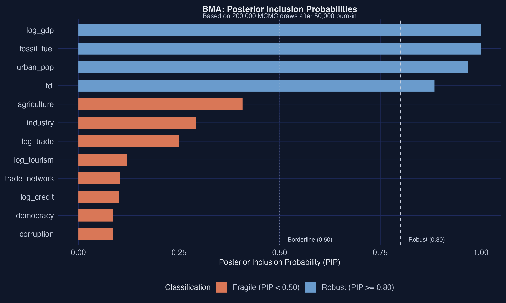
GDP (PIP = 1.00), trade network (0.986), fossil fuel (0.948), industry (0.841) clear the 0.80 line; all five noise variables sit below 0.15.
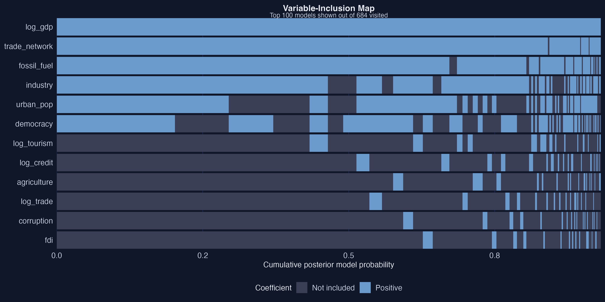
Variable-inclusion map of the top 100 models. Column width = posterior probability; blue = positive coefficient, gray = excluded. The core four form solid bands across the whole axis.
\[\text{MSE}=\text{Bias}^2+\text{Variance}+\text{Irreducible noise}\]
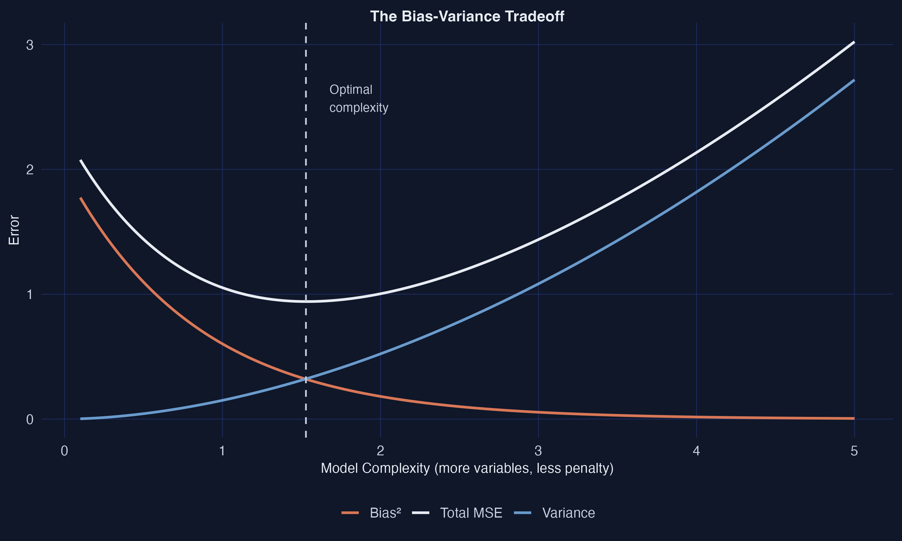
As complexity rises, bias falls but variance explodes. The optimal model lives in between — exactly where regularized methods operate.
\[\hat\beta_{\text{LASSO}}=\arg\min_\beta\ \frac{1}{2n}\|y-X\beta\|^2+\lambda\sum_{j=1}^{p}|\beta_j|\]
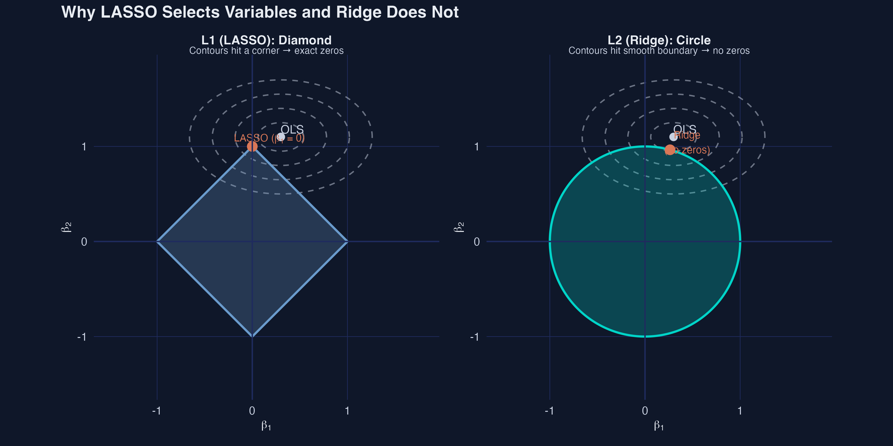
L1 contours hit a corner (a coefficient is set to exactly zero); L2 (Ridge) hits a smooth circle and never reaches zero.
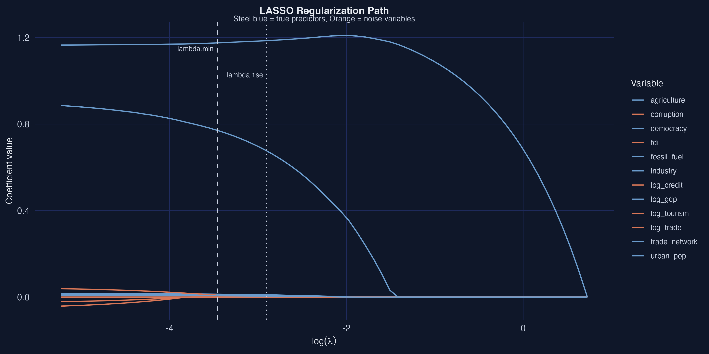
Regularization path — as \(\lambda\) grows (left→right), orange noise variables hit zero first; GDP (\(\beta=1.200\)) persists longest. Dashed/dotted lines mark \(\lambda_{\min}\) and \(\lambda_{1\text{se}}\).
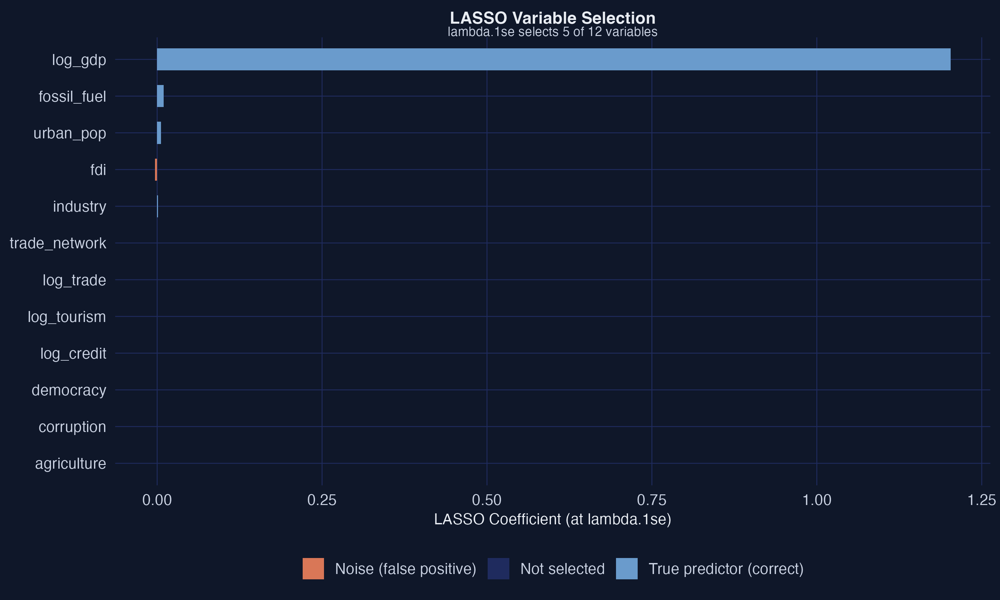
Six bars survive (steel blue = true predictor correctly kept); gray bars are dropped. No orange — zero noise variables falsely selected.
| Variable | LASSO \(\hat\beta\) | Post-LASSO \(\hat\beta\) | True \(\beta\) |
|---|---|---|---|
| log_gdp | 1.190 | 1.165 | 1.200 |
| fossil_fuel | 0.007 | 0.012 | 0.012 |
| urban_pop | 0.004 | 0.008 | 0.010 |
| trade_network | 0.631 | 0.898 | 0.500 |
LASSO selects; OLS on the selected set estimates — recovering unbiased magnitudes.
\[p(\gamma_j)\propto\exp(-|\gamma_j|/\tau)\]
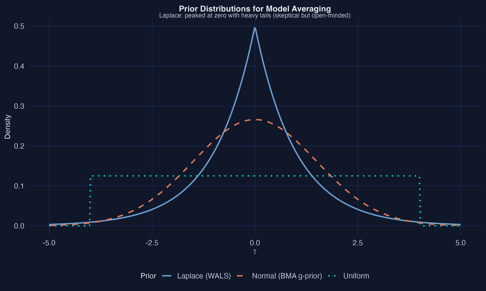
The Laplace prior (WALS) is peaked at zero with heavy tails — skeptical but open-minded. Its negative log is LASSO’s L1 penalty.
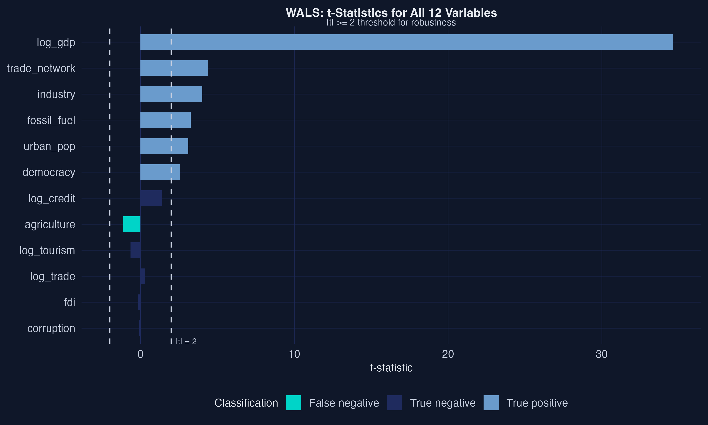
Six variables clear the \(|t|\geq 2\) line; GDP’s bar runs off the chart at 34.62, trade network next at 4.39. Noise variables all sit below 1.5.
Act III
| Variable | BMA PIP | LASSO | WALS \(\|t\|\) | Methods |
|---|---|---|---|---|
| log_gdp | 1.000 | yes | 34.62 | 3 |
| trade_network | 0.986 | yes | 4.39 | 3 |
| fossil_fuel | 0.948 | yes | 3.26 | 3 |
| industry | 0.841 | yes | 4.01 | 3 |
| urban_pop | 0.648 | yes | 3.11 | 2 |
| democracy | 0.607 | yes | 2.58 | 2 |
All five noise variables: flagged by none. Agreement across mechanically distinct methods is what earns credibility.
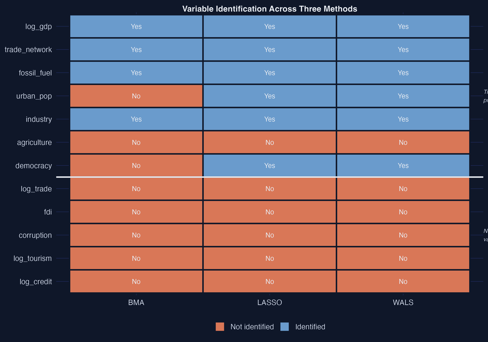
Method-agreement heatmap. Top four rows solid steel blue across all three methods; bottom five (noise) solid orange. Urban_pop and democracy split blue (LASSO/WALS) vs orange (BMA).
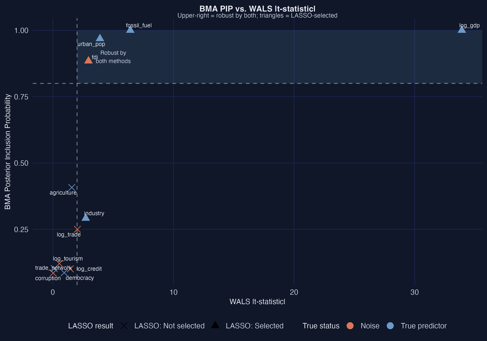
BMA PIP vs WALS \(|t|\). Upper-right quadrant = robust by both (the core four). Urban_pop and democracy: high \(|t|\) but PIP < 0.80 — BMA’s conservatism made visible.
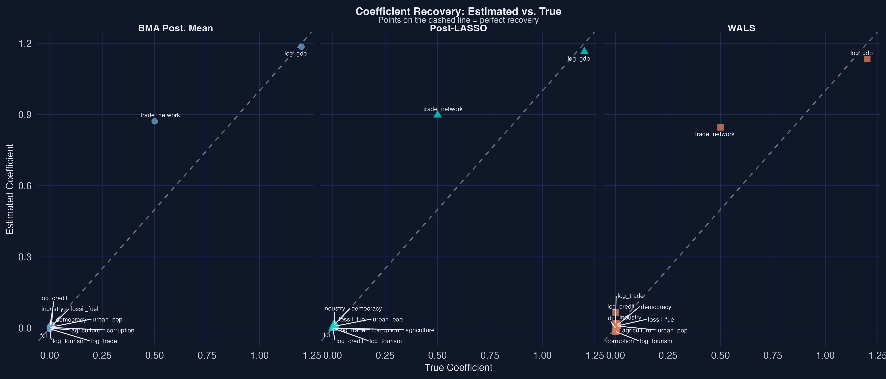
Estimates vs true coefficients, faceted by method. Points on the 45° line = perfect recovery. GDP lands on the line for all three; trade network is overshot by all (low-variance regressor).
| Method | Sensitivity | Specificity | Accuracy |
|---|---|---|---|
| BMA | 57.1% | 100% | 75.0% |
| LASSO | 85.7% | 100% | 91.7% |
| WALS | 85.7% | 100% | 91.7% |
Zero false positives across the board; the gap is in catching the moderate true effects.
Objection. Agreeing across three methods still can’t manufacture a causal effect.
Response. Correct. Triangulation buys robustness of selection, not identification. These coefficients are conditional associations; causal claims would still need exogeneity, no confounding, and correct functional form. The synthetic answer key validates the methods, not a CO\(_2\) policy.